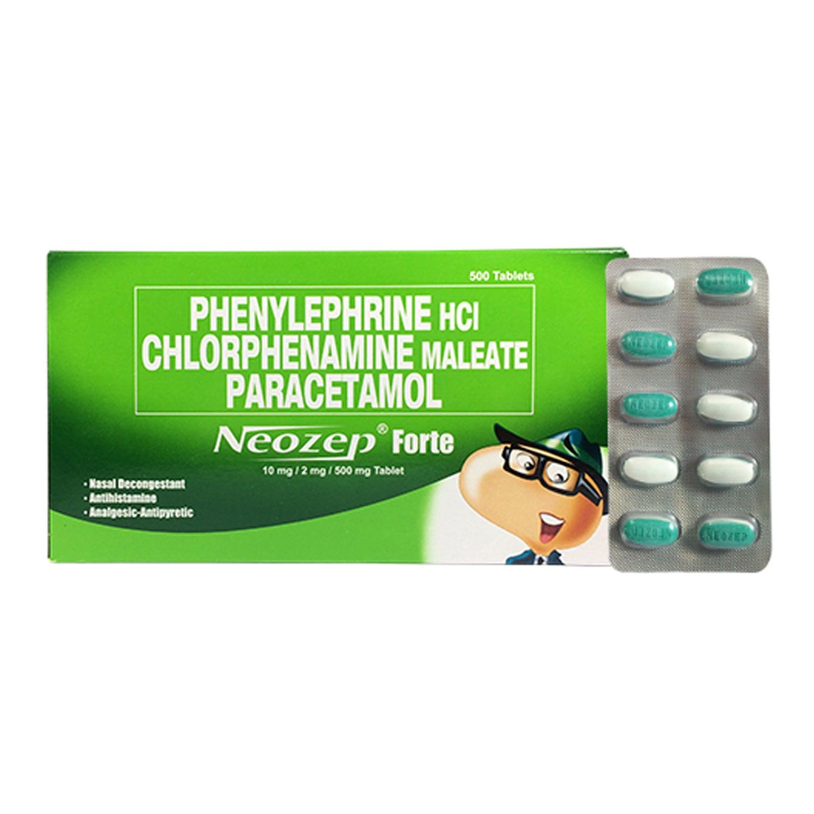
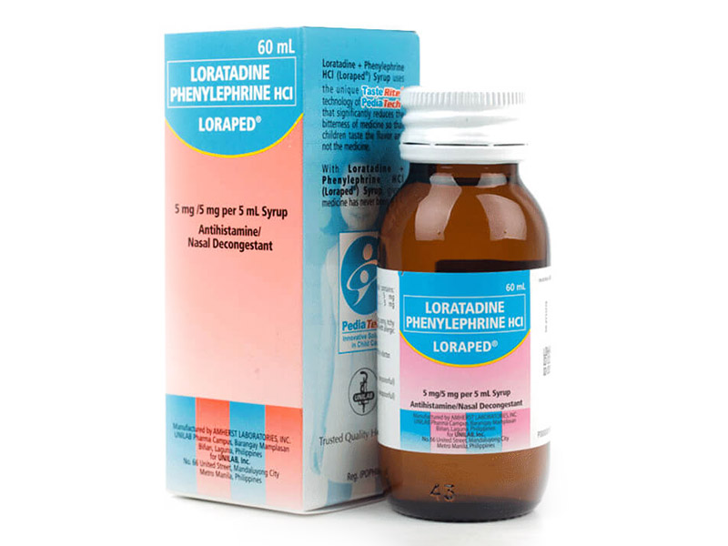
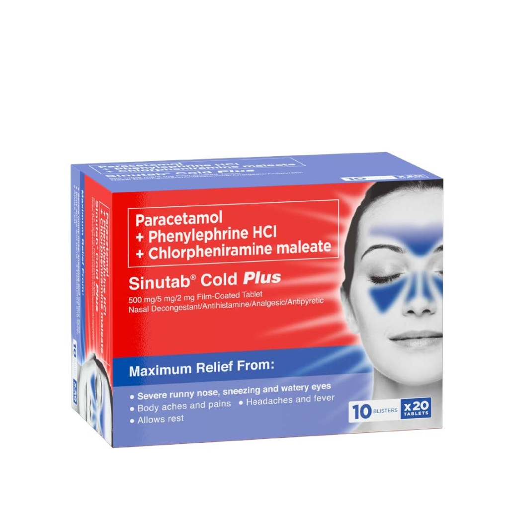

Medicine Guide For Sneeze

NEOZEP
Description
Phenylephrine HCl a nasal decongestant clears obstructed air passages and nasal sinuses due to congestion making breathing easier. It also reduces postnasal drip. Chlorphenamine Maleate, an anti-allergy, relieves symptoms such as runny nose, sneezing, and itchy, watery eyes.Guide
Adults: Orally, 1 tablet every 6 hours, or as recommended by a doctor. Neozep Z+ Forte provides the maximum daily intake of zinc when taken at the recommended dose of 4 times a day. To avoid excessive intake, refrain from using other supplements or medicines containing zinc.NAFARIN-A
Description
Nafarin®-AThis medicine is used for the relief of clogged nose, runny nose, postnasal drip, itchy and watery eyes, sneezing, headache, body aches, and fever associated with the common cold, allergic rhinitis, sinusitis, flu, and other minor respiratory tract infections.
Guide
Adults and Children 12 years and older: Orally, 1 tablet every 6 hours, or, as recommended by a doctor.For more information on safety, precaution and other information about this product, please see the Patient Information Leaflet.
DISUDRIN
Description
Disudrin® is the number 1 and most prescribed cold medicine for children that provides relief from clogged nose, runny nose, itchy watery eyes and sneezing due to common colds.Guide
1 to 3 months 0.25 mL (Oral Drops) every 6 hours4 to 6 months 0.5 mL (Oral Drops) every 6 hours
7 to 12 months 0.75 mL (Oral Drops) every 6 hours
1 to 2 years 2.5 mL (1/2 teaspoonful) (Syrup) every 6 hours
2 to 6 years 5 mL (2 teaspoonful) (1 teaspoonful) (Syrup) every 6 hours
12 years and older 10 mL (syrup) every 6 hours
Or, as recommended by a doctor Or, as recommended by a doctor

Body weight 30 kg or less - 2.5 mL (1/2 teaspoonful)
Body weight more than 30 kg - 5 mL (1 teaspoonful)
LOPARED
Description
This medicine is used for the relief of clogged nose, sneezing, runny, itchy nose, and itchy, watery eyes associated with allergic rhinitis.Guide
Children 2 years and older:Body weight 30 kg or less - 2.5 mL (1/2 teaspoonful)
Body weight more than 30 kg - 5 mL (1 teaspoonful)

Adults and children 12 years and over: Take 1-2 tablets every 4 as necessary. Do not exceed 8 tablets within a 24-hour period.
SINUTAB
Description
For Maximum Relief from Head Cold: With Triple Power Formula: stops runny nose (sipon), clears nasal congestion (baradong ilong), and provides up to 6 hour pain relief.Guide
How much and how often should you use this Medicine?Adults and children 12 years and over: Take 1-2 tablets every 4 as necessary. Do not exceed 8 tablets within a 24-hour period.

ALLERTA
Description
Allerta gives less drowsy, fast relief from allergies.It contains Loratadine, an anti-allergy ingredient. Loratadine blocks the substance that causes allergic symptoms (histamine). Loratadine is less likely to make you drowsy or dizzy than the older class of anti-allergy medicines.
Guide
This medicine should be taken orally (by mouth) once a day. (See table.) Missed Dose: Take the missed dose as soon as the patient remembers then the subsequent dose as recommended (i.e., after 24 hours).
CLARITIN
Description
Claritin® provides relief of symptoms that over 200 different allergens can trigger. It offers non-drowsy relief of symptoms caused by allergens like those from pollen, mold, dust, and pets. Claritin® is an antihistamine, so it hinders the cascade triggered by allergens.Guide
Adults and children 6 years and over 1 tablet daily; not more than 1 tablet in 24 hoursChildren under 6 years of age - Ask a doctor
Consumers with liver or kidney disease - Ask a doctor